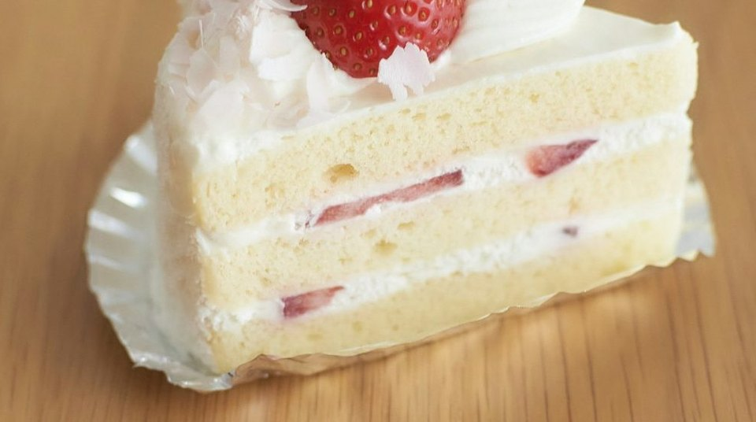
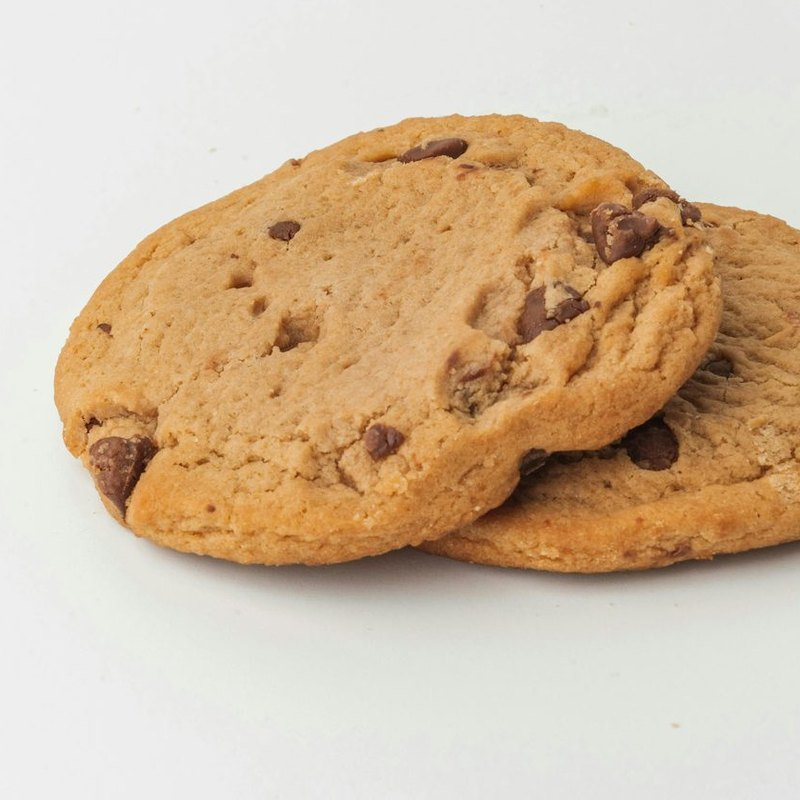
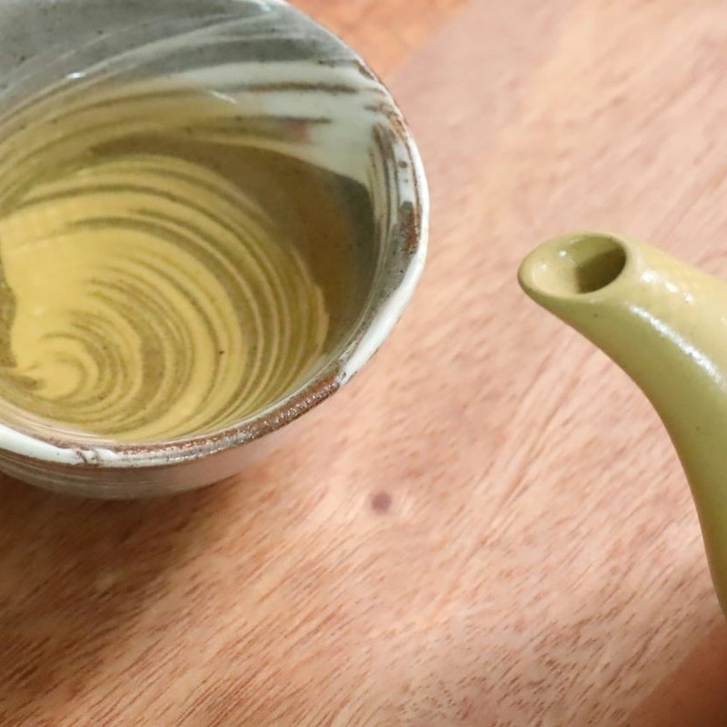
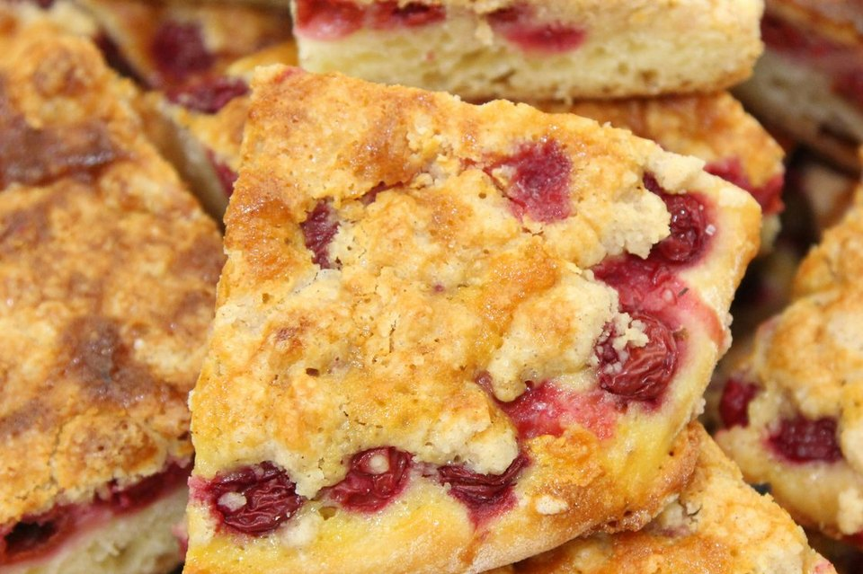
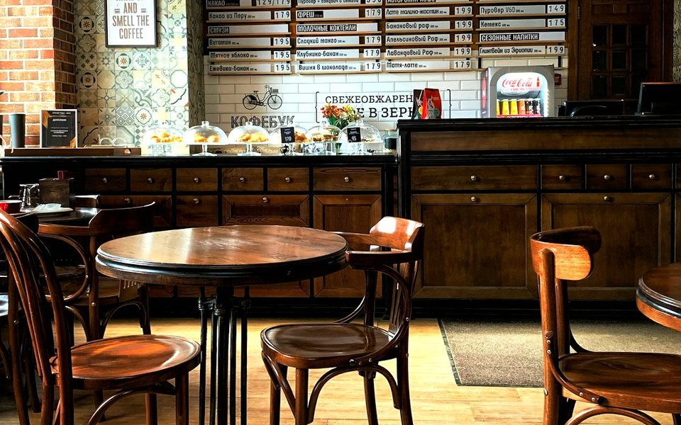
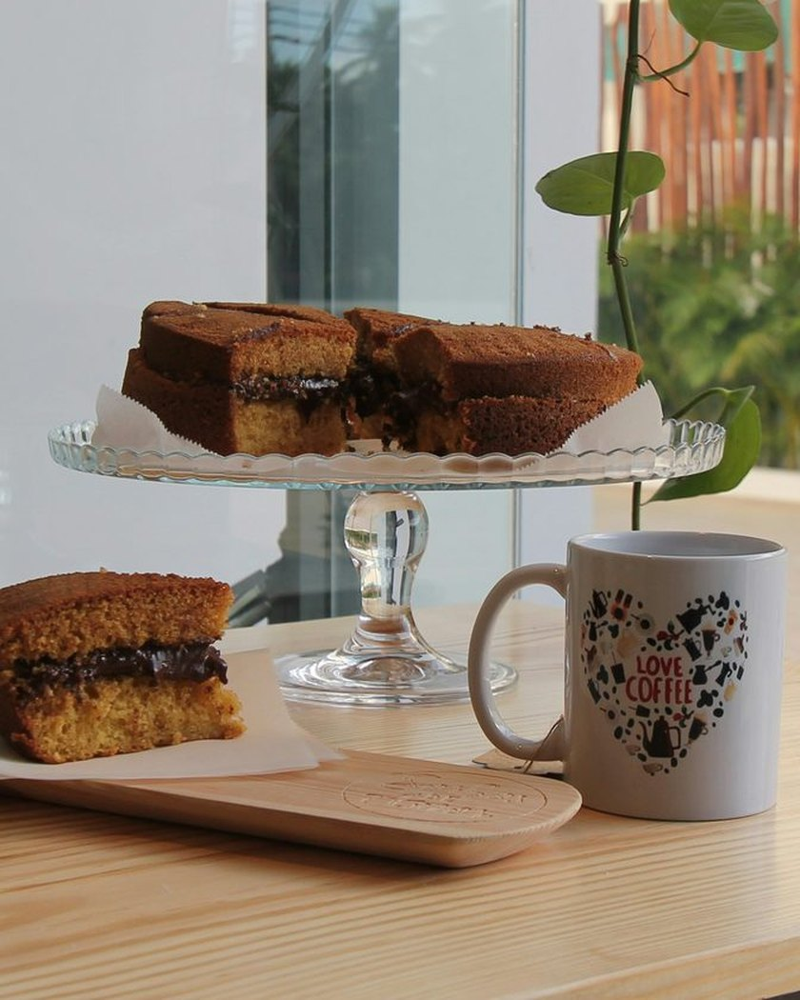

朝の
昼の

はじめての
はじめての方も、ふらりと
予約なしで

(01)
お店へ
予約なしで
どうぞ。 (02)
席につく
空いている
席へ。 おひとりの 方も 多い お店です。 (03)
ゆっくり
本を
読んだり、 窓の 外を なが めたり。

一皿
きょうの一皿

モーニング
トーストとゆで
日替わりランチ
週ごとに
焼き菓子
店で

よくある質問
(01)予約は
できますか？ ランチだけ、
前日までに LINE で お受けしています （見本）。 (02)子ども
連れでも 大丈夫ですか？ はい。
子ども 用の いすを ご用意しています （見本）。 (03)お菓子の
持ち帰りは できますか？ はい、
できます。 数に 限りが あるので、 取り置きは LINE で どうぞ （見本）。
ご相談
ケーキの